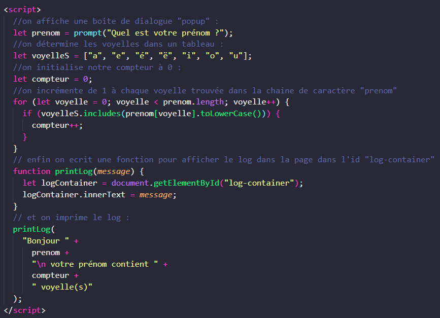

Apprendre JavaScript | Exercice 2
Froggiesplaining :
-
prompt() ? est utilisée pour afficher une boîte de
dialogue modale qui permet à l'utilisateur de saisir une entrée. C'est
un moyen simple de capturer des informations directement à partir de
l'utilisateur pendant l'exécution d'un script.
-
printlog ? est une manière personnalisée d'afficher
des messages directement sur une page web en manipulant le DOM
(Document Object Model), plutôt que d'utiliser console.log() qui
affiche uniquement dans la console du navigateur.
